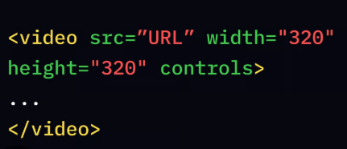
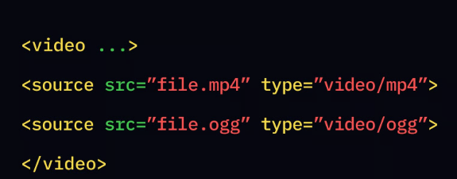

Media Tag in HTML:
To embed media in an HTML document, you use specific tags introduced in HTML5 that allow for native support of audio, video, and responsive images. These modern tags eliminate the need for third-party plugins like Flash.
Key media tags in HTML
HTML includes several key tags for embedding media:
- <audio>: Used for embedding sound content.
- <video>: Used for embedding video content.
- <source>: Specifies multiple media files within <audio> and <video> tags.
- <track>: Adds text tracks like subtitles or captions to <audio> and <video> elements.
- <picture>: A container for responsive images, allowing thewser to select the best image based on display conditions.
- <iframe>: Used to embed external content, often for displaying videos from sites like YouTube

Common Media Attributes:
Attributes are used to control the behavior and appearance of media elements. Some common attributes include:
- src: Specifies the media file URL.
- controls: Displays standard playback controls.
- autoplay: Starts media automatically, often requiring muted for video in modern browsers.
- loop: Repeats the media playback.
- muted: Silences the media.
- poster: Sets an image to display before a video plays.
